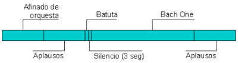

2.4.5. Actividad multipista
Temporalización: 30 minutos
Archivos necesarios: (hacer clic con el botón derecho del ratón sobre el enlace y guarda el enlace en el disco para poder trabajar con el archivo)
- Afinado de orquesta.ogg
- Aplausos de público en un concierto de música clásica.ogg
- Bach One.ogg
- Golpe de una vara de madera.ogg
En esta actividad vas a utilizar algunas de las herramientas y efectos que dispone Audacity que te servirá como ejemplo de lo que se puede hacer con el programa.
1. Abre un nuevo proyecto con Audacity.
2. Importa desde el menú Proyecto / Importar audio los siguientes archivos:
a) Afinado de orquesta.ogg
b) Aplausos de público en un concierto de música clásica.ogg
c) Bach One.ogg
d) Golpe de una vara de madera.ogg
3. En la pista Afinado de orquesta vas a quedarte con los 10 últimos segundos: selecciona todo menos los 10 segundos últimos i utiliza la herramienta cortar
4. De la pista Aplausos de público en un concierto de música clásica vas a realizar dos cambios:
a) Selecciona unos 10 segundos de la parte central i elimina todo lo otro con la herramienta Recortar fuera de la selección. La pista se queda sólo con la selección.
b) Selecciona dos segundos al principio de la pista y aplica a la selección el efecto Efecto / Fade In de forma que los aplausos vayan de menos a más. Haz lo mismo con los dos últimos segundos de la pista y aplica el efecto Fade Out de forma que los aplausos vayan de más a menos.
5. En la pista Golpe de vara de madera vas a simular los golpes que da el director de una orquesta con la batuta antes de comenzar un concierto. Haz los cambios (es conveniente que apliques el zoom para ver mejor el espectro del sonido):
a) Repetir el sonido dos veces más de forma que en total haya tres golpes de vara. Para ello seleciona el sonido y con el menu Efecto / Repetir indicar 2.
b) Como los golpes son muy rápidos, con los tres golpes de vara seleccionados aplica el efecto Efecto / Cambiar Tiempo. Para que sean más lentos, aplica un -25% en el cambio porcentual.
c) Sólo falta cambiar la amplitud del sonido para que el golpe de vara no sea tan fuerte y sobresalga demasiado respecto al resto de pistas. Con todo seleccionado aplicar el efecto Efecto / Amplificar con un valor de -10 en Amplificación (db)
6. Duplicar la pista Aplausos de público en un concierto de música clásica modificada en el paso 4. Para ello selecciona la pista y haz clic en el menú Editar / Duplicar.
7. Con la herramienta de Desplazamiento ve seleccionando las diferentes pistas situandolas en el tiempo de la siguiente forma:

En la animación siguiente puedes ver como desplazar las pistas en el tiempo.
El resultado final ha de ser parecido a:
Este artículo está licenciado bajo Creative Commons Attribution-NonCommercial 2.5 License
Formació del Professorat - CEFIRE